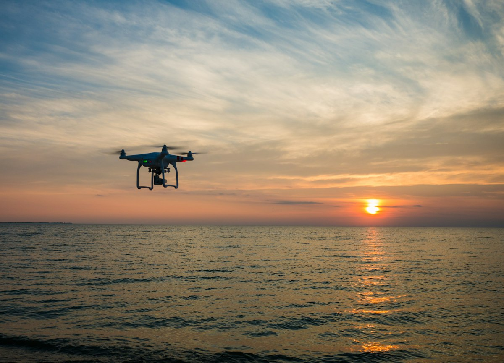

A Drone Sampler Moves Microplastics Measurement Off the Rooftop
One 25-minute flight at 100 meters over two Colorado sites turned an aerosol instrument into a height-resolved plastic sampler.

A borrowed sampler
In fall 2024, researchers working out of CIRES attached an environmental cyclone sampler to a small uncrewed aerial system. They flew it over two sites in Colorado.
The instrument is standard gear in aerosol monitoring. The team retooled it to capture particles from 1 to 10 micrometers and sent it up to 100 meters (328 feet). That height was chosen, then held.
Airborne microplastics are not news. They have turned up in seawater and in Arctic ice. The news is that a flying sampler can reach a set altitude, run one short flight, and return with enough particles to count. A rooftop, a tower and a ship cannot be told to do that.
The sky was never the bottleneck.
Why height matters
"Atmospheric microplastics are usually sampled from a rooftop, ground-based location or ship," said Radiance Calmer, the paper's lead author. She is a former CIRES researcher now at the Norwegian Polar Institute.
The second half of her answer is the part to hold onto. "Our proof-of-concept study shows we can sample atmospheric microplastics using UAS flights for a specific height." That is a claim about instruments, and it is a narrower claim than the coverage invites.
A rooftop reports what arrives at one surface, at the height of whatever building the funding allowed. A ship reports the layer over open water. Neither can be moved to a level of interest. A drone can be flown to one and held there while it draws air.
What two flights caught
The team flew above a heavily trafficked highway near Erie, and above residential areas and a landfill in Arvada. The samples came back dominated by hetero-aggregates, clusters in which plastic sits bound to environmental material. The paper notes that such clusters appear often near highways and places with high levels of human activity.
What happened to those samples next is the least glamorous part of the story. After the flights, researchers at CU Boulder preprocessed them to separate microplastics from organic particles. The samples then traveled to the University of Rhode Island, where the work became counting each particle and identifying it by plastic type. Two institutions, one autumn, and a long stretch of bench time between them.
The size band explains why those counts stayed small. Particles between 1 and 10 micrometers are large enough to catch on a filter and handle on a bench. They are also sparse, so every one of them represents a volume of air that had to be pulled past the inlet.
The 25 minute ceiling
That window shapes the entire design. Calmer put it plainly. "The challenge was to sample a large enough volume of air to ensure that some microplastics were present among all the particles," she said. "It was not easy because of the limited UAS flight time, which was around 25 minutes."
Microplastics are dilute in air. The volume has to be paid for in time or in flow, and a small drone has neither in abundance. The team reports being the first to fly an environmental cyclone sampler for this purpose and return counts. Counting plastic particles, it turns out, is mostly logistics. The flying was the short part.
How the money arrived
Calmer and de Boer were the principal investigators on the project. Both describe a CIRES internal research program as what got the work started. That program is a competition inside the institute, and it backs proposals that conventional sponsors find hard to fund.
An unusual use of an ordinary instrument is exactly the kind of proposal those steps look like. It also explains why atmospheric microplastic sampling still looks thin years after the particles were found in the food chain. The gap is a shortage of small engineering steps that no agency wants to underwrite on its own budget line.
The case against it
The best objection is that this answers a sampling question and not a dose question. It has two sites, one season, and no transport modeling or source attribution. Microplastics at 100 meters above a highway and a landfill would not startle anyone standing at either place on a windy afternoon.
The authors do not oversell the work. Their own label for it is proof-of-concept, and the conclusion they draw is feasibility for height-specific sampling. A reader hunting for a contamination estimate will not find one in this paper.
A second objection is worth keeping. The sites the team chose are places where people and machines concentrate, so the sampling plan selects for the answer it appears to find. Flying over a landfill tells you about the landfill.
What the air cannot tell yet
Gijs de Boer said the problem directly. "Microplastics can be transported to places people aren't looking for them, making them hard to track." He is a co-author and the Environment and Energy Division director at Brookhaven National Laboratory, and he previously worked as a research scientist at CIRES and CU Boulder.
The consequences that keep this topic funded are unsettled in the same paper. The particles are described as potentially harmful to human health. Their effects on cloud formation and on sea ice melting are listed as unknown. None of that is a finding of this study.
The team's next target follows that gap rather than the Colorado counts. They want work on long-range transport and on where the particles come from. Calmer hopes the flight program becomes, in her words, the launching point for another project.
"And because we all enjoy challenging and hard work, we are aiming for the Arctic," Calmer writes. Read that however you like; it is the direction the instrument is pointed.
Where a drone wins
The framing the team puts on what comes next is remote work: sampling above the ocean and in the lower atmosphere. Their paper notes that traditional methods in those places are limited and often cost-prohibitive. A research ship costs a research ship. A small drone costs a small drone, and it can be sent to a level no fixed platform can hold.
For anyone designing a monitoring campaign, the usable takeaway is narrow. The study is in Scientific Reports. Its title is Measuring atmospheric microplastic composition and occurrence from an uncrewed aerial system. Read the instrument section before the results, because it describes an engineering build rather than a pollution survey. A cyclone sampler, one small UAS and a window of about 25 minutes are enough to ask a height-specific question.
What the flights did not do marks the edge of this result. Nothing here turns particles at 100 meters into an inhaled dose, a source, or a trend. One autumn above two sites could not have tried. The count needed to make a place worth flying to twice is the next measurement, and this paper does not carry it.